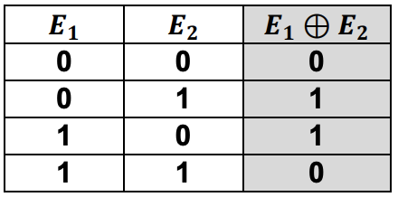
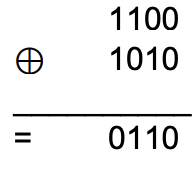
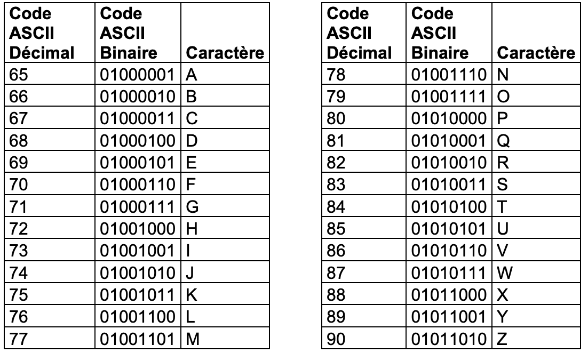
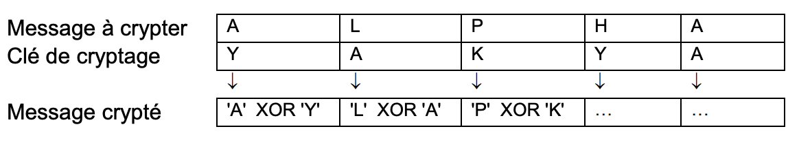
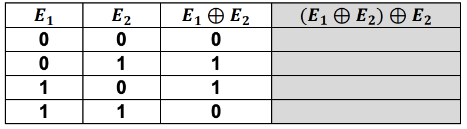
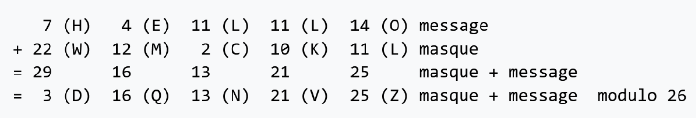

securite
Bac 2021 Centres étrangers 2: Exercice 3
Thèmes abordés : conversion décimal/binaire, table de vérité, codage des caractères
binaire logique ascii xor chiffrement
L’objectif de l’exercice est d’étudier une méthode de cryptage d’une chaîne de caractères à l’aide du codage ASCII et de la fonction logique XOR.
1. Le nombre 65, donné ici en écriture décimale, s’écrit 01000001 en notation binaire. En détaillant la méthode utilisée, donner l’écriture binaire du nombre 89.
2. La fonction logique OU EXCLUSIF, appelée XOR et représentée par le symbole $\bigoplus$, fournit une sortie égale à 1 si l’une ou l’autre des deux entrées vaut 1 mais pas les deux.
On donne ci-contre la table de vérité de la fonction XOR:

Si on applique cette fonction à un nombre codé en binaire, elle opère bit à bit.

3. On donne, ci-dessous, un extrait de la table ASCII qui permet d’encoder les caractères de A à Z. On peut alors considérer l’opération XOR entre deux caractères en effectuant le XOR entre les codes ASCII des deux caractères. Par exemple : ‘F’ XOR ‘S’ sera le résultat de $01000110 \bigoplus 01010011$.

Pour cela, on dispose d’un message à crypter et d’une clé de cryptage de même longueur que ce message. Le message et la clé sont composés uniquement des caractères du tableau ci-dessus et on applique la fonction XOR caractère par caractère entre les lettres du message à crypter et les lettres de la clé de cryptage.
Par exemple, voici le cryptage du mot ALPHA à l’aide de la clé YAKYA :
xor_crypt(message, cle) qui prend en paramètres deux
chaînes de caractères et qui renvoie la liste des entiers correspondant au
message crypté.
Aide :
- On pourra utiliser la fonction native du langage Python
ord(c)qui prend en paramètre un caractère c et qui renvoie un nombre représentant le code ASCII du caractère c. - On considère également que l’on dispose d’une fonction écrite
xor(n1,n2)qui prend en paramètre deux nombres n1 et n2 et qui renvoie le résultat de n1 ⊕ n2.
4. On souhaite maintenant générer une clé de la taille du message à partir d’un mot quelconque. On considère que le mot choisi est plus court que le message, il faut donc le reproduire un certain nombre de fois pour créer une clé de la même longueur que le message.
Par exemple, si le mot choisi est YAK pour crypter le message ALPHABET, la clé sera YAKYAKYA.)
Créer une fonction generer_cle(mot,n) qui renvoie la clé de longueur n à partir de la chaîne de caractères mot.
5. Recopier et compléter la table de vérité de $(𝑬𝟏 \bigoplus 𝑬𝟐) \bigoplus 𝑬𝟐$.

Exercice 3 25-NSIJ2ME1
Cet exercice porte sur la programmation de base en Python, la sécurisation des communications et les réseaux.
python bases logique chiffrement https
Partie A - La méthode du masque jetable
Dans cette partie, on s’intéresse à une méthode de chiffrement dite du masque jetable.
Voici ce que l’on peut lire sur le site Wikipédia :
Le chiffrement par la méthode du masque jetable consiste à combiner le message en clair avec une clé présentant les caractéristiques très particulières suivantes :
- la clé doit être une suite de caractères au moins aussi longue que le message à chiffrer ;
- les caractères composant la clé doivent être choisis de façon totalement aléatoire ;
- chaque clé, ou « masque », ne doit être utilisée qu’une seule fois (d’où le nom de masque jetable). Illustrons cette méthode par un exemple : on souhaite chiffrer le message HELLO avec la clé aléatoire, ou « masque », WMCKL.
Pour cela, on attribue un nombre à chaque lettre, par exemple le rang dans l’alphabet, de 0 à 25.
| Lettre | A | B | C | D | E | F | G | H | I | J | … | Y | Z |
|---|---|---|---|---|---|---|---|---|---|---|---|---|---|
| Rang | 0 | 1 | 2 | 3 | 4 | 5 | 6 | 7 | 8 | 9 | … | 24 | 25 |
Ensuite, on additionne la valeur du rang de chaque lettre du message avec la valeur du rang correspondante dans le masque.
Enfin, si le résultat est supérieur à 25 on soustrait 26 (calcul dit « modulo 26 »). Ainsi, le chiffrement du message HELLO avec la clé WMCKL donne le message chiffré DQNVZ comme le montre l’illustration suivante.

Exemple de chiffrement par la méthode du masque jetable - wikipedia
Dans cet exercice, on ne travaillera que sur des chaînes de caractères écrites en majuscules non accentuées (les 26 caractères allant de ‘A’ à ‘Z’).
- Chiffrer, par la méthode du masque jetable, le message LIBRE à l’aide de la clé EYQMT.
En Python, on crée une fois pour toute la variable alphabet qui sera accessible et utilisable dans toutes les fonctions. Celle-ci contient la liste des 26 lettres de l’alphabet rangées dans l’ordre alphabétique :
alphabet = ['A', 'B', 'C', 'D', 'E', 'F', 'G', 'H', 'I', 'J', 'K', 'L', 'M', 'N', 'O', 'P', 'Q', 'R', 'S', 'T', 'U', 'V', 'W', 'X', 'Y', 'Z']
- Écrire une fonction Python
indicequi prend pour paramètre une listeLet renvoie l’indice de element dans la listeL.
On supposera que chaque élément de la liste L n’y apparaît qu’une seule fois
et que element est bien présent dans la liste L.
Par exemple, l’appel indice(alphabet, 'K') renvoie l’entier 10.
- Écrire une fonction Python
lettres_vers_indicesqui prend pour paramètre une chaîne de caractères et renvoie, dans l’ordre, la liste des indices de ces caractères dans l’alphabet. Par exemple, l’appellettres_vers_indices('HELLO')renvoie la liste d’entiers[7, 4, 11, 11, 14].
On dispose également d’une fonction indices_vers_lettres, qu’on ne demande
pas d’écrire, permettant de convertir une liste d’entiers, compris entre 0 et 25, en une chaîne de caractères.
Par exemple, l’appel indices_vers_lettres([3, 16, 13, 21, 25]) renvoie
la chaîne de caractères ‘DQNVZ’.
Ci-après, on donne une fonction Python chiffrement incomplète, qui, à partir d’un
message msg et d’une clé cle entrés en paramètres, renvoie la chaîne de caractères représentant le message chiffré par la méthode du masque jetable.
- Recopier et compléter les lignes 7 à 13 de la fonction
chiffrement. - Indiquer, en justifiant, ce que l’on observe lors de l’appel
chiffrement('RESEAU', 'GFTZ').
On s’intéresse maintenant au déchiffrement d’un message chiffré par la méthode du masque jetable.
Par exemple, le déchiffrement du message DQNVZ avec la clé WMCKL donne le message HELLO.
- Déchiffrer le message GMEDH avec la clé FVEIT.
- Expliquer comment procéder pour déchiffrer un message lorsqu’on connaît la clé.
On souhaite maintenant écrire, en Python, une fonction dechiffrement qui permet de déchiffrer un message chiffré par la méthode du masque jetable.
Pour cela, on s’inspire de la fonction chiffrement dans laquelle les paramètres ainsi que les lignes 2 à 5 sont inchangées. On décide cependant de remplacer, ligne 6, le nom de la variable indices_msg_chiffre par le nom plus explicite
indices_msg_dechiffre.
8. Adapter les lignes 6 à 13 de la fonction chiffrement pour obtenir la nouvelle
fonction dechiffrement.
Partie B - Sécurisation des communications
- Expliquer la différence entre un algorithme de chiffrement symétrique et un algorithme de chiffrement asymétrique.
Alice souhaite envoyer un message à Bob par l’intermédiaire d’un réseau informatique en utilisant un algorithme de chiffrement asymétrique.
Pour cela, Bob envoie à Alice sa clé publique. Alice chiffre ensuite le message à l’aide de la clé publique de Bob qu’elle vient de recevoir, puis elle envoie ce message chiffré à Bob.
- Indiquer comment Bob peut déchiffrer le message que lui envoie Alice.
- Expliquer comment une tierce personne pourrait se faire passer pour Alice sans que Bob ne s’en aperçoive.
- Expliquer brièvement le fonctionnement du protocole HTTPS.
- Expliquer pourquoi, pour sécuriser intégralement les communications sur Internet, on utilise le protocole HTTPS plutôt qu’un chiffrement asymétrique.